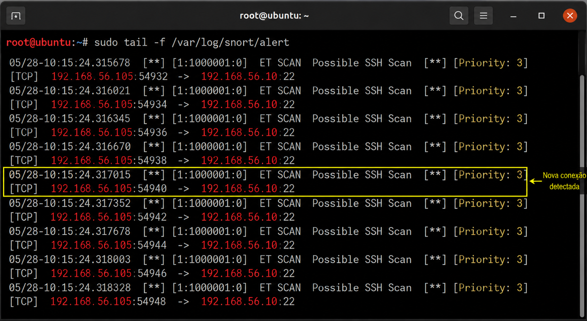
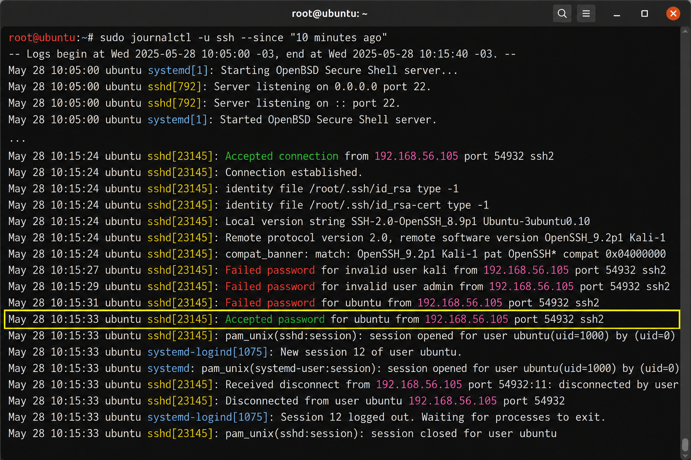
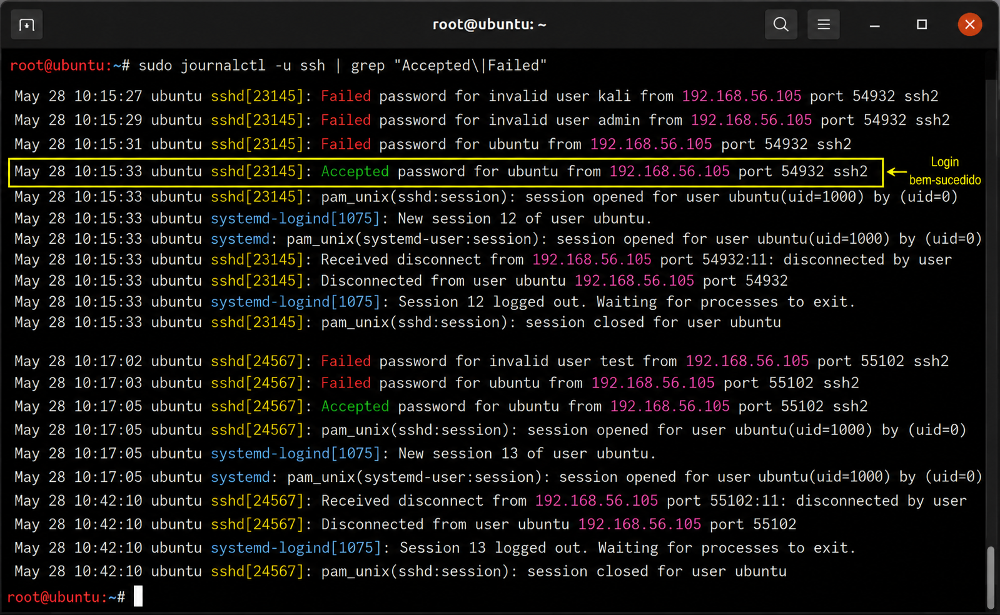
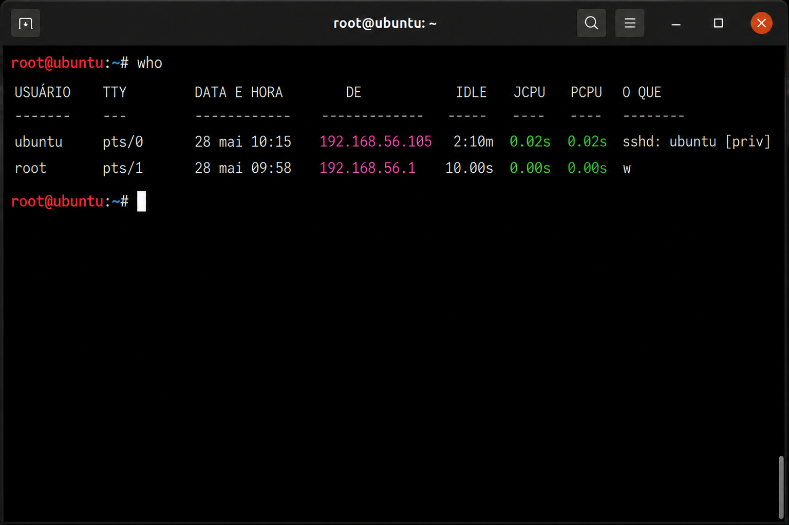
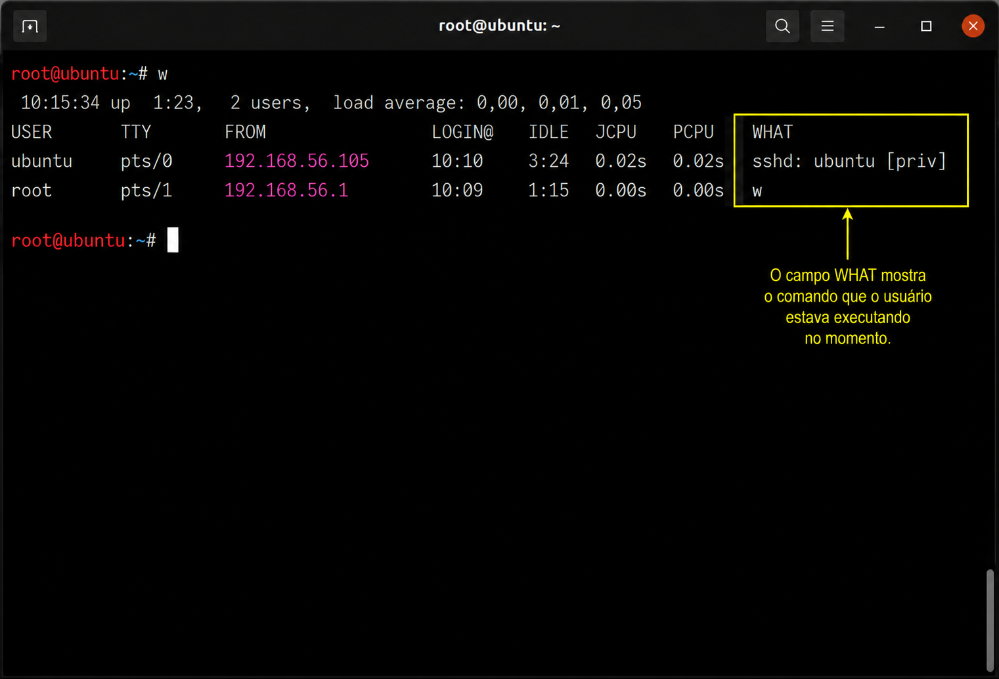
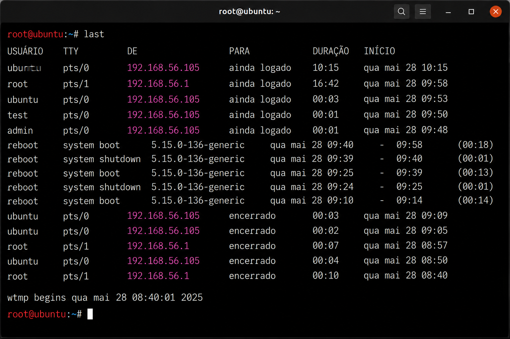
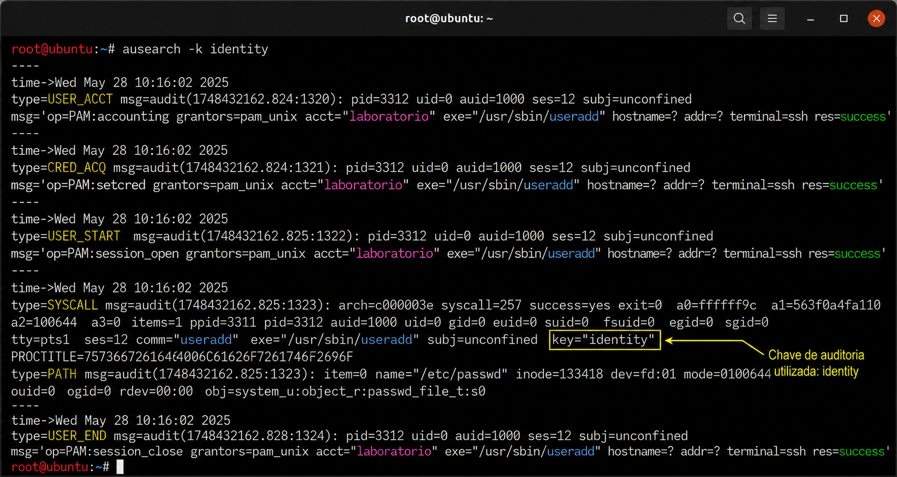
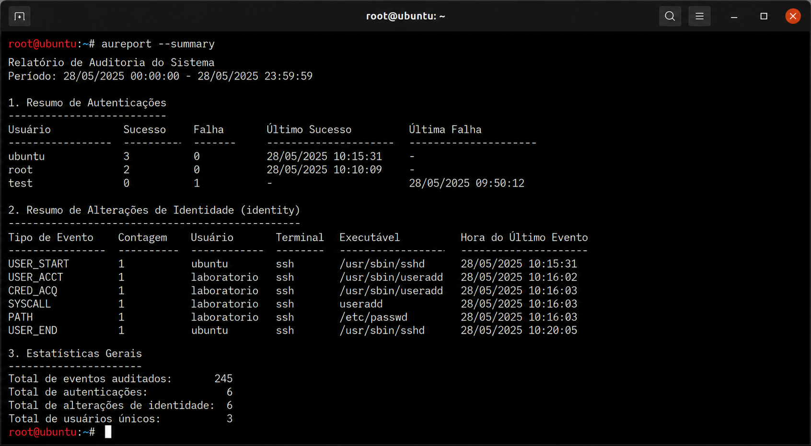

🎯 Objetivo
No laboratório anterior aprendemos a configurar o ambiente de monitoramento e interpretar evidências produzidas por ferramentas como Auditd, Syslog e Snort.
Agora iremos utilizar esse mesmo ambiente para acompanhar as fases de um ataque, observando quais evidências são produzidas em cada etapa.
O objetivo não é aprender como realizar um ataque, mas compreender como um analista de segurança consegue identificar atividades suspeitas utilizando logs, eventos e tráfego de rede.
🏢 Cenário do Laboratório
Imagine que você faz parte da equipe de Segurança de uma empresa responsável por monitorar servidores Linux que hospedam aplicações corporativas.
Durante um turno de monitoramento, um alerta é gerado indicando atividades suspeitas relacionadas ao servidor.
Sua missão será acompanhar cada fase desse incidente, identificando quais evidências são produzidas e quais ferramentas podem auxiliar na investigação.
🥷 Kali Linux
Origem da atividade
🐧 Ubuntu Server
Servidor Monitorado
🛡 Analista SOC
Investigação
🧰 Ferramentas Utilizadas
Todas as atividades apresentadas neste laboratório são executadas em um ambiente controlado e possuem finalidade exclusivamente educacional.
Nosso foco será compreender quais evidências são produzidas durante cada fase da Cyber Kill Chain e como um analista pode correlacionar essas informações para identificar um possível incidente de segurança.
🔥 Fase 01 — Reconnaissance (Reconhecimento)
Toda invasão começa com a coleta de informações.
Antes de tentar acessar um servidor, o atacante procura descobrir quais serviços estão disponíveis, quais portas estão abertas e quais tecnologias estão sendo utilizadas.
Essa etapa é conhecida como Reconnaissance e normalmente ocorre sem qualquer autenticação no sistema alvo.
🔍 Reconnaissance
Em execução
🚪 Initial Access
⚙ Persistência
👀 O que o analista observa?
Durante essa fase, o atacante ainda não comprometeu o servidor.
Mesmo assim, a atividade pode gerar diversas evidências na rede.
Neste momento, o sistema operacional ainda pode não registrar nenhuma alteração.
As principais evidências estão relacionadas ao tráfego de rede.
Nem toda conexão recebida representa um ataque.
Um dos desafios de um analista SOC é diferenciar atividades legítimas de comportamentos que indicam reconhecimento ou preparação para uma possível invasão.
🧪 Laboratório 01 — Detectando o Reconhecimento
Nosso objetivo será observar como uma simples atividade de reconhecimento pode gerar evidências na rede, mesmo sem que exista qualquer acesso ao servidor.
O Kali Linux iniciará uma tentativa de conexão ao serviço SSH disponível no Ubuntu Server.
Embora essa ação seja simples, ela será suficiente para produzir eventos que poderão ser identificados pelas ferramentas de monitoramento.
🥷 Kali Linux
Tentativa de conexão
🐧 Ubuntu Server
Recebe a conexão
🛡 Ferramentas
Registram evidências
🎯 Evidências Esperadas
Ao final desta etapa, esperamos encontrar as seguintes evidências.
Observe que nesta fase ainda não existe qualquer alteração no sistema operacional.
Não haverá criação de usuários, alteração de arquivos ou persistência.
As evidências estão concentradas na camada de rede e nos serviços que recebem conexões.
🕒 Linha do Tempo do Incidente
10:15:23 Aguardando atividade... Status: 🟢 Ambiente monitorado. Nenhum evento detectado.
🚨 O Incidente Começa
Durante o monitoramento, uma nova conexão é recebida pelo servidor.
Neste momento, o analista ainda não sabe se trata-se de uma atividade legítima ou de uma tentativa de comprometimento.
A primeira ação consiste em verificar quais evidências foram produzidas pelas ferramentas de monitoramento.
Um computador executando Kali Linux inicia uma conexão SSH contra o servidor Ubuntu.
Nosso objetivo não é analisar o atacante, mas compreender quais evidências essa atividade gera para o defensor.
🔍 Passo 01 — Verificando o Snort
O primeiro indício de atividade suspeita normalmente aparece na camada de rede.
Vamos verificar os alertas gerados pelo Snort.
sudo tail -f /var/log/snort/alert
Caso exista uma tentativa de conexão, novos eventos serão exibidos em tempo real.

Figura 1 - O Snort identifica uma nova conexão recebida pelo servidor.
✔ Endereço IP de origem
✔ Porta de destino
✔ Horário do evento
✔ Tipo de alerta
Essas informações serão utilizadas nas próximas etapas da investigação.
🕒 Linha do Tempo do Incidente
10:15:23 ✔ Nova conexão detectada. 10:15:24 ✔ Snort gera alerta. Status 🟡 Investigação iniciada.
🔎 Passo 02 — O serviço SSH recebeu a conexão?
Após identificar uma atividade suspeita na rede, o próximo passo é verificar se o serviço SSH registrou a tentativa de conexão.
Essa validação permite confirmar se o tráfego identificado pelo Snort chegou efetivamente ao servidor.
📖 Consultando o Journal
Como o serviço SSH é gerenciado pelo systemd, podemos consultar seus eventos utilizando o journalctl.
sudo journalctl -u ssh --since "10 minutes ago"
O comando exibe os eventos recentes relacionados ao serviço SSH.

Figura 2 - Eventos registrados pelo serviço SSH após a tentativa de conexão.
✔ Horário da conexão.
✔ Endereço IP de origem.
✔ Usuário informado (quando existir).
✔ Mensagens de autenticação.
Essas informações permitem correlacionar os eventos com o alerta gerado anteriormente pelo Snort.
🔄 Correlacionando Evidências
Agora possuímos duas fontes de informação.
Observe que, neste momento, ainda não sabemos se houve autenticação.
Sabemos apenas que alguém tentou estabelecer uma sessão SSH.
🕒 Linha do Tempo do Incidente
10:15:23 ✔ Nova conexão detectada. 10:15:24 ✔ Snort gera alerta. 10:15:25 ✔ SSH registra recebimento da conexão. Status 🟡 Conexão confirmada. Autenticação ainda não identificada.
🔐 Passo 03 — A autenticação foi bem-sucedida?
Nem toda tentativa de conexão resulta em um login válido.
Antes de elevar o nível do incidente, o analista deve verificar se a autenticação foi concluída com sucesso ou rejeitada.
Essa informação normalmente está presente nos logs do OpenSSH.
📖 Consultando os Eventos de Autenticação
No Ubuntu, os eventos relacionados à autenticação podem ser consultados utilizando o journalctl.
sudo journalctl -u ssh | grep "Accepted\|Failed"
Esse comando filtra apenas os eventos relacionados a tentativas de autenticação.

Figura 3 - Registro de autenticação SSH indicando um login bem-sucedido.
✔ Login aceito (Accepted)
✔ Usuário autenticado
✔ Endereço IP de origem
✔ Horário do evento
Essas informações confirmam que a conexão evoluiu para uma sessão válida.
🔄 Correlacionando os Eventos
Neste momento, a investigação já possui evidências oriundas de diferentes fontes.
A correlação dessas informações permite concluir que a atividade não se limitou a uma tentativa de conexão.
Agora existe uma sessão SSH ativa no servidor.
Uma autenticação bem-sucedida não representa, necessariamente, um incidente de segurança.
Ela deve ser analisada em conjunto com o contexto, como horário, origem da conexão, usuário utilizado e comportamento observado após o login.
🕒 Linha do Tempo do Incidente
10:15:23 ✔ Nova conexão detectada. 10:15:24 ✔ Snort gera alerta. 10:15:25 ✔ SSH recebe a conexão. 10:15:31 ✔ Login SSH realizado com sucesso. Status 🟠 Sessão autenticada. Investigação continua.
👣 Passo 04 — O que aconteceu após o login?
Após confirmar que a autenticação foi realizada com sucesso, o próximo passo é identificar o comportamento da sessão SSH.
Neste momento, o analista procura responder algumas perguntas importantes.
👤 Verificando usuários conectados
O comando
who
permite visualizar
os usuários
que possuem sessões
ativas no servidor.
who

Figura 4 - O comando who exibe as sessões atualmente ativas no servidor.
Observe principalmente:
✔ Nome do usuário
✔ Terminal utilizado
✔ Horário da conexão
✔ Endereço IP remoto
📊 Consultando atividades da sessão
O comando
w
apresenta
informações adicionais
sobre cada sessão ativa.
w
Além do usuário, podemos visualizar o tempo de conexão e o comando executado naquele momento.

Figura 5 - O comando w fornece detalhes sobre as sessões ativas e os processos executados pelos usuários.
📜 Histórico de Logins
Também podemos verificar os últimos acessos registrados no servidor.
last
Esse comando permite reconstruir o histórico das conexões SSH.

Figura 6 - Histórico das últimas autenticações registradas no servidor.
Neste ponto, já conseguimos responder algumas perguntas importantes.
✔ O Snort detectou a conexão.
✔ O SSH aceitou o login.
✔ Existe uma sessão ativa.
✔ O histórico confirma o acesso.
A investigação evolui de um simples alerta para um incidente com evidências correlacionadas.
🕒 Linha do Tempo do Incidente
10:15:23 ✔ Nova conexão detectada. 10:15:24 ✔ Snort gera alerta. 10:15:25 ✔ SSH recebe a conexão. 10:15:31 ✔ Login autenticado. 10:15:34 ✔ Sessão ativa identificada. 10:15:36 ✔ Histórico de login confirmado. Status 🟠 Usuário autenticado e em atividade.
⚙ Passo 05 — Detectando Persistência
Até este momento, as evidências indicavam apenas que um usuário havia estabelecido uma sessão SSH no servidor.
Agora a investigação ganha um novo nível de criticidade.
Durante a sessão, o usuário realiza alterações no sistema com o objetivo de manter acesso ao ambiente.
Na Cyber Kill Chain, essa etapa corresponde à fase de Installation (Persistência).
Durante a investigação, o analista identifica que um novo usuário foi criado no servidor.
Essa alteração pode representar uma tentativa de persistência caso não exista uma justificativa administrativa.
👤 Simulando a Criação de um Usuário
Para reproduzir o cenário, criaremos um novo usuário.
sudo useradd laboratorio sudo passwd laboratorio
Esses comandos serão monitorados pelo Auditd, conforme configurado no LAB 01.
🔎 Consultando os Eventos do Auditd
Agora vamos verificar quais registros foram produzidos pela auditoria.
sudo ausearch -k identity
O Auditd exibirá os eventos relacionados às alterações de identidade do sistema.

Figura 7 - O Auditd registra a criação de um novo usuário através da chave de auditoria identity.
✔ Horário da alteração.
✔ Usuário que executou a ação.
✔ Processo responsável.
✔ Chave de auditoria utilizada.
✔ Resultado da operação.
📊 Gerando um Relatório
Além da consulta detalhada, o Auditd permite gerar relatórios resumidos.
sudo aureport --auth
O relatório facilita a identificação de eventos relacionados à autenticação e alterações de identidade.

Figura 8 - Relatório resumido de autenticação e alterações de identidade gerado pelo aureport.
Agora a investigação possui evidências oriundas de múltiplas fontes.
🌐 Snort Detectou a conexão.
📖 journalctl Registrou o login.
👤 who / w Confirmaram a sessão ativa.
📋 Auditd Registrou a criação do novo usuário.
A combinação dessas evidências indica que a atividade evoluiu para uma alteração no sistema operacional.
🕒 Linha do Tempo do Incidente
10:15:23 ✔ Nova conexão detectada. 10:15:24 ✔ Snort gera alerta. 10:15:25 ✔ SSH recebe a conexão. 10:15:31 ✔ Login autenticado. 10:15:34 ✔ Sessão ativa identificada. 10:15:36 ✔ Histórico de login confirmado. 10:16:02 ✔ Novo usuário criado. 10:16:03 ✔ Auditd registra alteração de identidade. Status 🔴 Persistência detectada.
🧩 Passo 06 — Reconstruindo o Incidente
Ao longo deste laboratório, coletamos diversas evidências produzidas por ferramentas distintas.
Individualmente, cada evento possui pouco significado.
Entretanto, quando correlacionados, eles permitem reconstruir todo o ciclo do incidente, identificando sua evolução desde a primeira conexão até a persistência no sistema operacional.
📊 Correlação das Evidências
🕒 Linha do Tempo Consolidada
10:15:23 Snort detecta nova conexão SSH. ↓ 10:15:25 SSH recebe a conexão. ↓ 10:15:31 Usuário autenticado. ↓ 10:15:34 Sessão SSH ativa. ↓ 10:16:02 Novo usuário criado. ↓ 10:16:03 Auditd registra alteração de identidade. ↓ 10:16:05 Persistência estabelecida.
🎯 Relacionando com a Cyber Kill Chain
Agora podemos relacionar cada evidência coletada com as fases da Cyber Kill Chain.
🔍 Reconnaissance
Snort
🚪 Initial Access
SSH
🔐 Authentication
journalctl
⚙ Persistence
Auditd
A investigação demonstrou como eventos aparentemente independentes podem ser correlacionados para revelar a evolução de um incidente.
Essa capacidade de análise é uma das principais atividades desempenhadas por equipes de SOC (Security Operations Center) e DFIR (Digital Forensics and Incident Response).
📚 Conclusão
Ao longo deste laboratório, acompanhamos a evolução de um incidente de segurança sob a perspectiva de um analista SOC.
Em vez de analisar apenas um evento isolado, correlacionamos informações provenientes de diferentes fontes de monitoramento.
Essa abordagem permitiu identificar a progressão do incidente desde a primeira conexão até o estabelecimento de persistência no sistema operacional.
📊 Resumo da Investigação
🎯 O que aprendemos?
- ✅ Monitorar conexões de rede utilizando o Snort.
- ✅ Confirmar tentativas de acesso através do journalctl.
- ✅ Identificar autenticações SSH.
- ✅ Verificar sessões ativas no servidor.
- ✅ Detectar alterações críticas utilizando o Auditd.
- ✅ Correlacionar eventos para reconstruir um incidente.
- ✅ Relacionar evidências às fases da Cyber Kill Chain.
O principal objetivo deste laboratório não foi demonstrar técnicas ofensivas, mas desenvolver a capacidade de identificar, correlacionar e interpretar evidências produzidas durante um incidente.
Em ambientes corporativos, essa habilidade é fundamental para reduzir o tempo de detecção, resposta e contenção de ameaças.
🚀 Próximo Laboratório
No próximo laboratório, continuaremos a evolução do incidente utilizando a matriz MITRE ATT&CK.
Enquanto a Cyber Kill Chain descreve a progressão de um ataque, a MITRE ATT&CK permite identificar as técnicas utilizadas pelo invasor em cada etapa, facilitando a investigação e a criação de mecanismos de detecção.
🔥 LAB 02
Cyber Kill Chain
🎯 LAB 03
MITRE ATT&CK
➡ Acessar o LAB 03